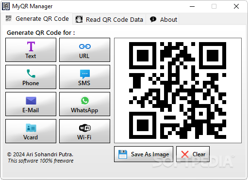

Create and scan QR codes with flexible data support in a clean and efficient layout.
QR codes have become an essential tool in the digital age, enabling seamless information sharing, authentication, and data access. MyQR Manager is a powerful yet easy-to-use solution that consolidates QR code generation and scanning into a single, intuitive interface.
With MyQR Manager, you can quickly generate QR codes from a wide array of input types such as plain text, URLs, phone numbers, SMS messages, emails, and more. The application also allows you to decode existing QR codes using images, making it an all-in-one utility for QR management tasks.
The minimal and clean design ensures a user-friendly experience, ideal for both beginners and advanced users. You can generate a QR code, view it immediately within the app, and export it to disk for printing or sharing purposes.
Whether you're working on marketing materials, personal projects, or internal systems, MyQR Manager delivers efficiency and flexibility, all from a lightweight and portable platform.
Create QR codes for text, links, contact data, phone numbers, and more with a single click.
Decode QR codes from existing image files using the built-in reader module.
Supports many standard formats including URLs, emails, phone numbers, SMS, Wi-Fi configs, and more.
